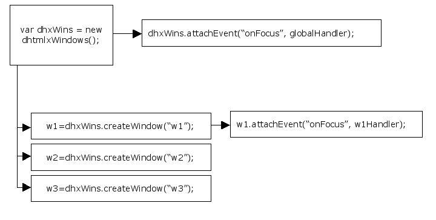

Event Handling
Default Events
Default events signal various actions, such as the user clicking a button to Park a window, or a window is being closed. Default events are usually button events.
Button events can be as follows:
- onClick Event executes the specified JS code or function, when the user clicks the left mouse button on the object.
Default events can be redefined by user, who can choose to assign other user-defined events instead. In this case, default events will be ignored until they are restored by user.
Redefine Default Button Event
The user can choose to redefine a default button event by adding any user-defined event instead. To redefine a button default event the user can use attachEvent() method:
dhxWins.window(id).button(id).attachEvent(eventName, handler);
Adding Window Events Handlers
The entire point of an event is to inform a handler that something has happened to a component in the GUI. A handler can figure out what exactly happened and respond in a meaningful way.
The list of events to which user-defined handlers can be attached is given below:
- onMoveFinish – occurs when the window movement was finished;
- onResizeFinish – occurs when the window resizing was finished;
- onFocus – occurs when the window was focused;
- onParkDown/onParkUp – occur when the window was parked down/up;
- onMaximize/onMinimize – occur when the window was maximized/minimized;
- onShow/onHide – occur when the window was shown/hidden;
- onClose – occurs before the window is closed;
- onHelp – occurs when the user clicks the “help” button;
- onContentLoaded - occurs when the external page content is loaded into the window (attachURL() and attachURLAJAX() methods).
Adding Global Event Handlers for Windows
The user can add global event handlers for windows. This can be done in the following way:
dhxWins.attachEvent(eventName, handler);
Note: the names of the events are case-insensitive.
Adding Personal Window Event Handler
If there is a window to which the user wants to assign a special handler, this can be done by adding the handler to the window directly. While other windows will be calling global handlers, this window with personal handler will call this personal handler:
dhxWins.window(id).attachEvent(eventName, handler);
Restore Global Event Handler
The user can detach a personal event from a window. In this case a global event handler will be restored for this window, i.e. when personal handler is removed from the window, the window will call global handler.
dhxWins.window(id).detachEvent(eventId);
Remove Global Handler
Global handlers can be easily removed with the help of the following method:
dhxWins.detachEvent(eventId);
Understanding Event Handlers Priority

In the situation described above windows w2 and w3 will call “globalHandler” when they are focused.
The window w1 will call personal “w1Handler” when focused.